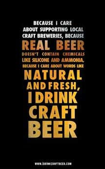

What is Craft Beer?
A craft brewer is small, independent and traditional:
Small: Annual production of 6 million barrels of beer or less. Beer production is attributed to a brewer according to the rules of alternating proprietorships. Flavored malt beverages are not considered beer for purposes of this definition.
Independent: Less than 25% of the craft brewery is owned or controlled (or equivalent economic interest) by an alcoholic beverage industry member who is not themselves a craft brewer.
Traditional: A brewer who has either an all malt flagship (the beer which represents the greatest volume among that brewers brands) or has at least 50% of its volume in either all malt beers or in beers which use adjuncts to enhance rather than lighten flavor.
The following are some concepts related to craft beer and craft brewers: Craft brewers are small brewers. The hallmark of craft beer and craft brewers is innovation. Craft brewers interpret historic styles with unique twists and develop new styles that have no precedent. Craft beer is generally made with traditional ingredients like malted barley; interesting and sometimes non-traditional ingredients are often added for distinctiveness. Craft brewers tend to be very involved in their communities through philanthropy, product donations, volunteerism, and sponsorship of events. Craft brewers have distinctive, individualistic approaches to connecting with their customers. Craft brewers maintain integrity by what they brew and their general independence, free from a substantial interest by a non-craft brewer. The majority of Americans live within ten miles of a craft brewer.